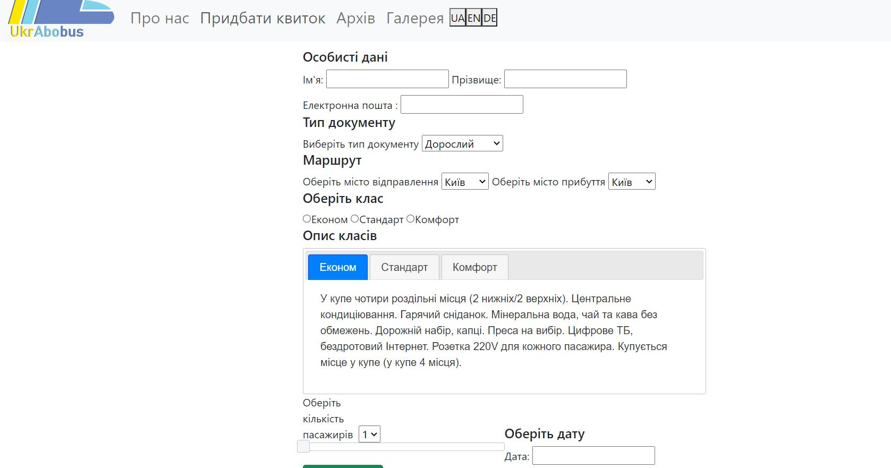

ЛАБОРАТОРНА РОБОТА №8
Тема: ІНТЕРФЕЙСИ ВЗАЄМОДІЇ WEB-ЗАСТОСУВАНЬ З СИСТЕМОЮ КЕРУВАННЯ БАЗ ДАНИХ
(СУБД). SQL-ЗАПИТИ У PHP-СЦЕНАРІЯХ. ІНТЕРФЕЙСИ WEB-ЗАСТОСУВАНЬ з СУБД. ВИКОРИСТАННЯ
СЕСІЙ І COOKIES В СЦЕНАРІЯХ АВТОРИЗАЦІЇ. РОЗРОБКА СЦЕНАРІЇВ ОБРОБКИ ДАНИХ З ФАЙЛІВ.
Мета: придбати практичні навички роботи взаємодії WEB- застосувань з СУБД,
використання сесій і cookies в сценаріях авторизації, розробки сценаріїв обробки
даних з файлів.
Розташування лабораторної: GitHub
Лабораторна робота №8
Опис об'єктів предметної галузі
Перед початком моделювання баз даних необхідно описати предметну область.
Опис предметної області:
База даних створюється для інформаційного обслуговування
користувачів сайту подорожей по Україні. БД повинна містити дані про
транспорт, їх розклади, та типи транспортів і надавати
можливість до швидкого і зручного обрання квитків. Відповідно до
предметної області система будується з врахуванням наступних
особливостей:
- Кожен транспорт має свої три різновиди.
- Кожен існуючий розклад має містити інформацію про дату прибуття, час прибуття, номер транспорту та кількість пасажирів.
- Користувач може скористуватись знижкою, якщо має певний статус.
Після аналізу предметної області можна виділити ряд сутностей, і
приступити до проектування інфологічної моделі.
Виділимо базові сутності цієї предметної області:
- Розклади. Атрибути розкладів – ID, місто відправлення, місто прибуття, час відправлення, час прибуття, ID транспорту, дата.
- Типи транспортів. Атрибути типів транспорту – ID, тип.
- Транспорти. Атрибути транспортів – ID, ID типу транспорту, кількість місць.
- Квитки. Атрибути квитків – ID, ID пасажирів, ID транспорту, кількість пасажирів, ID типу класу, вартість, ID тип документу.
- Пасажири. Атрибути пасажирів – ID, ім'я, прізвище, електронна пошта, пароль.
- Типи класів. Атрибути типу класів – ID, назва, опис, вартість.
- Типи документів. Атрибути типу документів – ID, назва, знижка.
Інфологічна модель
Для зображення інфологічної моделі побудуємо ER-діаграми з нотаціями
Чена/Crow's Foot:
- Інфологічна модель з атрибутами
Даталогічна модель
Після нормалізації до 3НФ було отримано таку даталогічну моделі, побудовану за допомогою MS Access:
Реалізація БД в СУБД MySQL, phpMyAdmin
Введення, виведення даних БД, пошук даних
Введення даних
if (!$mysqli->query("INSERT INTO passangers(name, sname, email) VALUES
('$name', '$surname', '$email');")){
echo("Error description:" . $mysqli -> error);
}
if (!$mysqli->query("INSERT INTO tickets(id_passanger, number_of_passangers, id_type, id_document) VALUES
({$mysqli->insert_id}, $numbers_of_passangers, $class_type, $document_type);")){
echo("Error description:" . $mysqli -> error);
}
Виведення даних
<div class="main-content" style="font-size:30px; text-align:center">
Дякуємо за замовлення, <?php echo $_POST["name"] . " " . $_POST["surname"]; ?><br>
Номер квитка: <?= $var ?><br> Дата: <?php echo $_POST["date"]; ?>
</div>
Пошук даних
echo 'Поточний розклад на '.$date.' з міста '.$departure.' до міста '.$arrival.'<br>';
if($departure != $arrival)
{
if ($mysqli -> connect_errno) {
echo "Failed to connect to MySQL: " . $mysqli -> connect_error;
exit();
}
$query = "SELECT id FROM transports WHERE id_transport_type = ".$trip."";
$transports = $mysqli->query($query);
foreach ($transports as $row) {
$query2 = "SELECT * FROM timetables WHERE id_transport = ". $row["id"]." AND city_from ='$departure' AND city_to ='$arrival'";
$timetables = $mysqli->query($query2);
foreach ($timetables as $timetable) {
?>
<input type="hidden" name="name" value="<?php echo $name ?>">
<input type="hidden" name="sname" value="<?php echo $sname ?>">
<input type="hidden" name="date" value="<?php echo $date ?>">
<input type="radio" name="ticket" id="<?php echo $value?>" value = "<?php echo $value?>">
<?php
echo "Час відправлення ". $timetable["departure_time"]. ". Час прибуття ". $timetable["arrival_time"]. "Кількість місць: ".$row["number_of_places"]."<br>";
$value += 1;
}
}
}
Результат запиту:
SQL-запити на інший функціонал власного сайту. Запис у файл.
Запити на оновлення даних:
if ($mysqli -> connect_errno) {
echo "Failed to connect to MySQL: " . $mysqli -> connect_error;
exit();
}
$sql = "UPDATE timetables SET date = '{$formattedDate->format(DATE_RFC3339)}' WHERE city_to='$arrival' AND id_transport=".$trip."";
if (!$mysqli->query("INSERT INTO passangers(name, sname, email) VALUES ('$name', '$surname', '$email');")){
echo("Error description:" . $mysqli -> error);
}
Дякуємо за замовлення, <?php echo $_POST["name"] . " " . $_POST["surname"]; ?><br>
Номер квитка: <?= $var ?><br> Дата: <?php echo $_POST["date"]; ?>
<?php
$mysqli = new mysqli("localhost:3306", "root", "", "ukrabobus_db");
$document = $_POST["document_type"];
$class_type = $_POST["class_type"];
$numbers_of_passangers = $_POST["numbers_of_passangers"];
$price = 0;
$query1 = "SELECT * FROM types_of_class toc WHERE toc.id=".$class_type.";";
$types_of_class = $mysqli->query($query1);
foreach ($types_of_class as $row){
$price+=$row['price'];
}
$price*=$numbers_of_passangers;
$query2 = "SELECT * FROM document_types dt WHERE dt.id=".$document.";";
$document_types = $mysqli->query($query2);
foreach ($document_types as $row){
$price*=$row['discount'];
}
echo "<br>Загальна вартість:".$price;
Запис у файл:
$fd = fopen("hello.txt", 'w') or die("не удалось создать файл");
$str = "Дякуємо за замовлення, {$_POST['name']} {$_POST['surname']}\n Номер квитка: $var \n Дата: {$_POST['date']} \n
Загальна вартість:$price";
fwrite($fd, $str);
fclose($fd);
Авторизація. Сесія.
$res = $mysqli->query("SELECT * FROM ukrabobus_db.passangers WHERE `e-mail` = '$email';") or die(mysqli_error($mysqli));
if (mysqli_num_rows($res) == 0) {
$mysqli->query("INSERT INTO ukrabobus_db.passangers(name, sname, `e-mail`, password) VALUES ('$name', '$sname', '$email', '$pwd')") or die(mysqli_error($mysqli));
$a = login($mysqli, $user);
if ($a !== '') {
array_push($message, $a);
}
} else {
array_push($message, "User already exists");
}
}
}
function login($mysqli, $user) {
$res = $mysqli->query("SELECT * FROM ukrabobus_db.passangers WHERE `e-mail` = '$user->email'") or die(mysqli_error($mysqli));
if (mysqli_num_rows($res) != 0) {
foreach($res as $queryuser) {
if($queryuser["password"] !== $user->password) {
return "Incorrect input or user does not exist";
} else {
$arr = [];
$arr['name'] = $queryuser["name"];
$arr['sname'] = $queryuser["sname"];
$arr['email'] = $queryuser["e-mail"];
$arr['password'] = $queryuser["password"];
$_SESSION["user"] = $arr;
header("location:index.php");
return '';
}
}
} else {
return "Incorrect input or user does not exist";
}
}
Іконки для вибору мови. Кукі.
Іконки для вибору мови:
<?php
$strJsonFileContents = file_get_contents("./res/str.json");
$json_data = json_decode($strJsonFileContents, true);
$lang = "en";
if ($lang == "en") {
$str = $json_data["en"];
} elseif ($lang == "de") {
$str = $json_data["de"];
} else {
$str = $json_data["ua"];
}
?>
Результат:

Кукі:
<script>
function setDe() { document.cookie = "lang=de"; document.location.reload(); }
function setEn() { document.cookie = "lang=en"; document.location.reload(); }
function setUa() { document.cookie = "lang=ua"; document.location.reload(); }
</script>
Висновки: Протягом цієї лабораторної роботи ми придбали практичні
навички роботи взаємодії web-застосувань з системою управління базами даних (субд), використання
сесій і cookies в сценаріях авторизації, розробки сценаріїв обробки даних з файлів.
 Лємєшова С. С,
Лємєшова С. С,  Тітов Є. О,
Тітов Є. О,  Юдаков О. С.
Юдаков О. С.